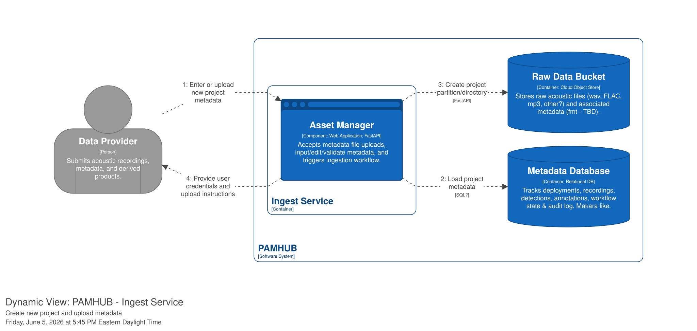
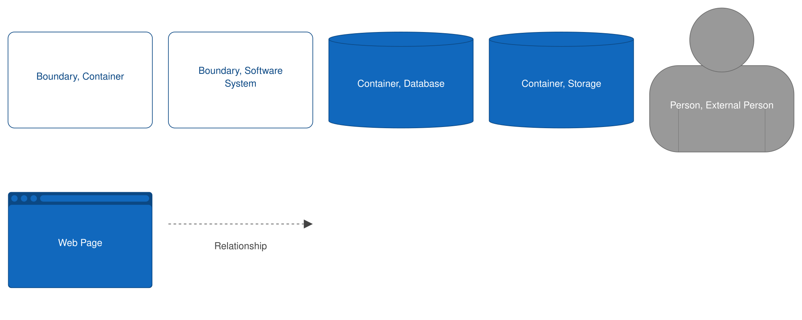

Use Case: Create project metadata
ID: UC-012
Primary Actor: Data Provider
Goal: Enter or upload project metadata into the system.
1. Descriptions
Trigger: Data Provider logs in to the system and selects "Create New Project"
Pre-conditions:
- Data provider has recovered PAM deployments (moorings, gliders, ship-mounted, etc.), downloaded data from the recorders and performed data backup.
- Data Provider has consulted Makara Data Submission Guide and has all mandatory metadata (DEFINE THIS) available at their workstation.
Basic Flow: The "Happy Path" where everything goes as expected.
Alternative Flows: Scenarios where the user takes a different path or an error occurs.
Priority: [1, 2, 3, 4] High -> Low
2. Basic Flow (Happy Path)
- Data Provider selects Create New Project.
- System provides metadata entry form.
- Actor types in mandatory project level metadata into the form.
- System validates metadata.
- Actor selects "Submit new project metadata"
- System updates metadata database with the information provided.
- System creates new partition in the
raw-data-uploadbucket for the raw audio files from the newly created project.
Question
Does the "create new partition" step belong here or in the Upload Raw Data use case?
Question
What about uploading pregenerated metadata as validated CSV or JSON files? Decide on this feature.


3. Alternative / Exception Flows
3.1 [Condition A] (e.g., Invalid Login)
- System displays error message.
- Use case returns to Step 1 of Basic Flow.
3.2 [Condition B] (e.g., Out of Stock)
- System suggests alternative products.
- Use case terminates.
4. Special Requirements
[e.g., Response time must be under 2 seconds] [e.g., Mobile responsive layout required]